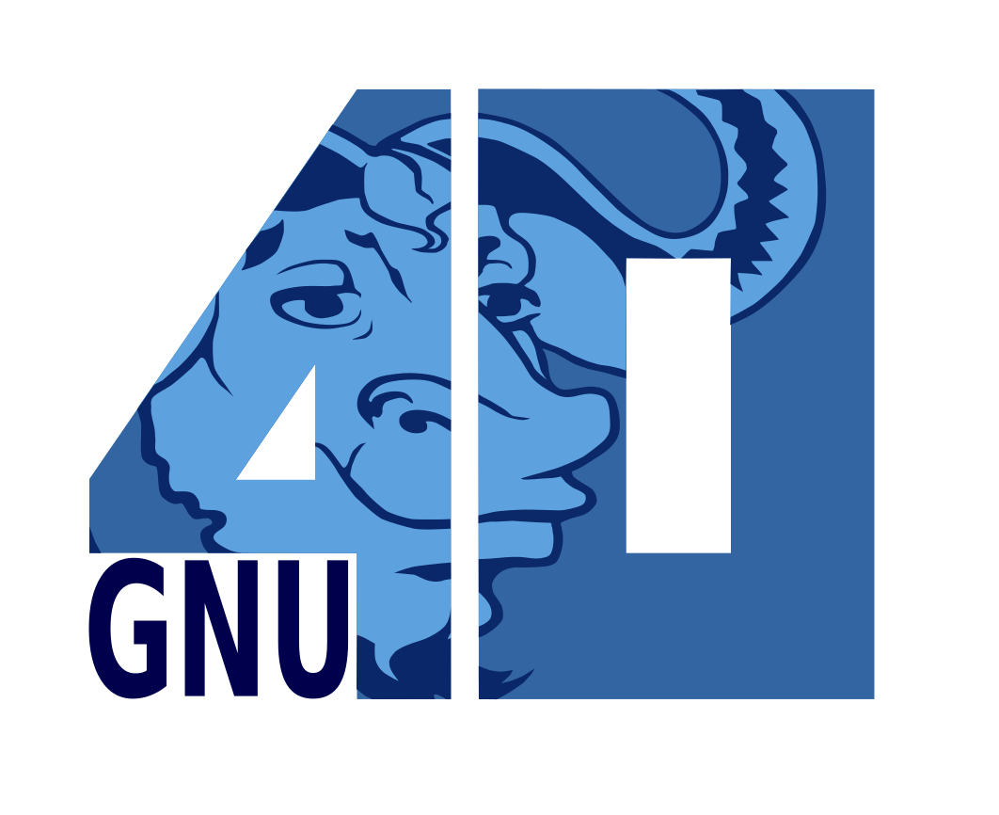
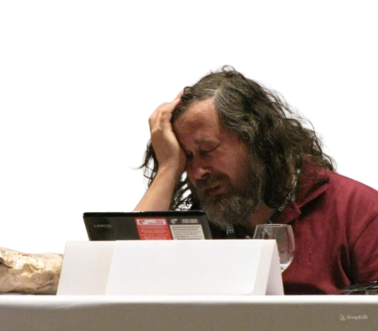

What is GNU?
GNU is an operating system that is free software—that is, it respects users' freedom.
The GNU operating system consists of GNU packages (programs specifically released by the GNU Project) as well
as free software released by third parties.
The development of GNU made it possible to use a computer without software that would trample your freedom.
We recommend installable versions of GNU (more precisely, GNU/Linux distributions) which are entirely free software.
What is Free Software?
Free software is a matter of liberty, not price.
To understand the concept, you
should think of “free” as in “free speech,”
not as in “free beer.”
Free software means the
users have the freedom to
run, copy, distribute, study,
change and improve the
software.
1. The freedom to run the program as you wish, for any purpose.
2. The freedom to study how the program works, and change it so it does your computing as you wish!
3. Access to the source code is a precondition for this.
4. The freedom to redistribute copies so you can help others.
5. The freedom to distribute copies of your modified versions to others.
6. By doing this you can give the whole community a chance to benefit
from your changes. Access to the source code is a precondition for this.

Proprietary Software Is Often Malware
Backdoor: A backdoor is a typically covert method of bypassing normal authentication or encryption in a computer, product, embedded device, or its embodiment. Backdoors are most often used for securing remote access to a computer, or obtaining access to plaintext in cryptosystems.
Spyware: is any software with malicious behavior that aims to gather information about a person or organization and send it to another entity in a way that harms the user by violating their privacy, endangering their device's security, or other means. This behavior may be present in malware and in legitimate software.
Help develop the GNU operating system
Do one of the GNU High Priority Enhancement Projects.
Write free manuals and other documentation for GNU software.
Propose your useful software packages as GNU packages. See the GNU
software evaluation information.
There are other projects that would be good to do.
Work on a project on the FSF's list of very important free software projects.